Рассуждения об устройстве и функциях эпотидов, которыми мы занимались последнее время, будут неполными, если не дополнить их рассказом о вспомогательном таране военных кораблей античности – о проемболоне.
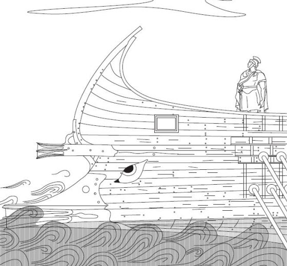
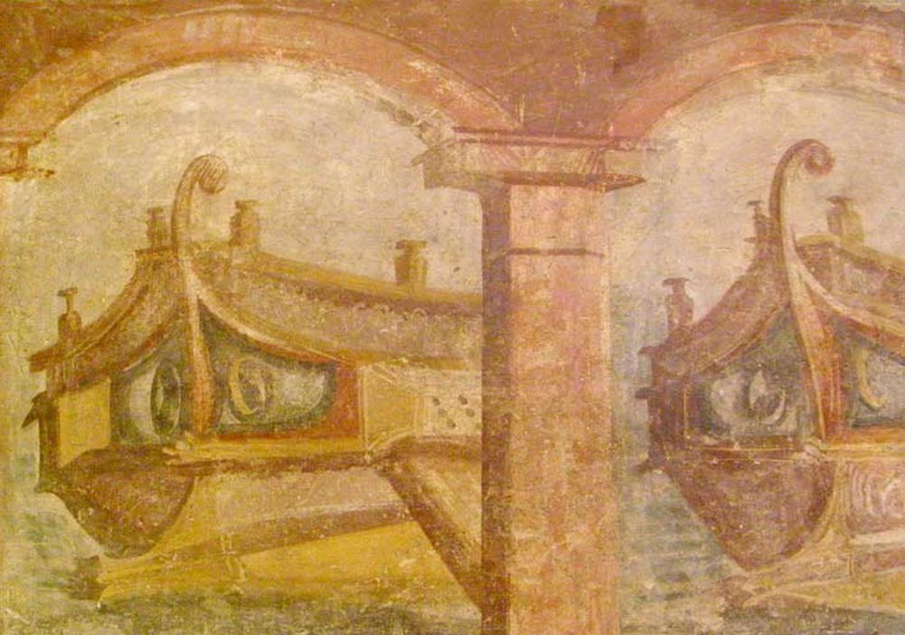
Его называют по-разному. ‘Subsidiary ram’ (вспомогательный таран) (Nicholls, 1971), ‘subsidiary spur’ (вспомогательный шпирон) или, делая буквальный перевод термина proembolion на английский язык, ‘fore-ram’ (носовой таран) (Casson, 1971), ‘upper ram’ (верхний таран) (Morrison, 1996). По-гречески этот элемент конструкции носовой части корабля называется προεμβόλιον. В словарях его еще называют ‘ship's beak’ (корабельный клюв); в литературе, не связанной с морским делом, можно встретить «корабельный бивень». В русских книгах и статьях почему-то привилось проемболон, хотя можно встретить и проэмболон, и проемболион.
Проемболон античного судна в форме головы вепря. Musée d'Histoire de Marseille
В литературе проемболон стал часто упоминаться после обнаружения нескольких экземпляров этой конструкции на дне Средиземного моря. Самым замечательным и, возможно, одним из самых первых из этих археологических находок стал так называемый «таран из Белгаммеля» (Belgammel Ram), найденный группой английских дайверов-любителей в 1964 году у побережья Ливии, неподалеку от Тобрука, на глубине около 25 м, среди останков груза позднеримских амфор
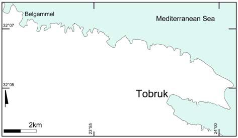
Англичане увезли его к себе на родину в качестве сувенира, но после того как выяснилась большая историческая ценность этого артефакта, передали его в кэмбриджский Музей Фицуильяма (Fitzwilliam Museum). В 2010 г. находку вернули в Ливию, предварительно проведя тщательное ее исследование.
Таран из Белгаммеля весит около 20 кг, высота его немного более 44 см, длина – 64 см.
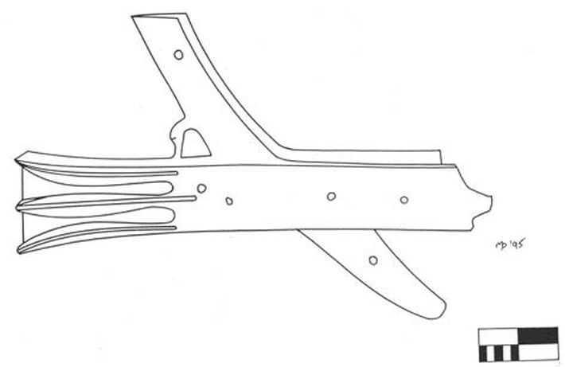
Рисунок тарана из Белгаммеля (Pridemore, 1996)
Первое описание тарана из Белгаммеля было сделано Николсом (Nicholls, 1971).
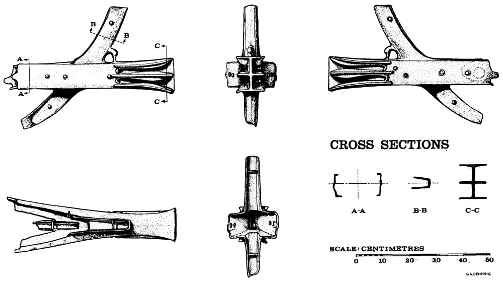
Он выдвинул несколько гипотез о назначении тарана: от возможной принадлежности к прогулочному судну как часть его декора или уменьшенной копии тарана большого корабля, до военного трофея, перевозимого на грузовом судне в место установки монумента. Однако в конечном итоге все же автор пришел к заключению, что это был вспомогательный таран потерпевшего крушение военного корабля, и он не связан с грузом купеческого судна, обнаруженным в том же месте. Главное назначение вспомогательного тарана, полагает Николс, – защищать конструкции носовой части корабля. Иногда устанавливалось несколько таких вспомогательных таранов. Форма проемболона в виде трезубца закрепилась во флотах античности начиная с конца IV в. до н.э., а закругленная форма форштевня, на которую он устанавливался, появилась в исторически близкое время – в начале III в. до н.э. Сохранялись эти формы вплоть до эпохи Августа, когда изменилась и форма форштевня, и трезубец превратился в три меча. Исходя из этого, Николс датирует таран из Белгаммеля III-I вв. до н.э. Однако нам известна запись (IG II² 1614), в которой несколько раз упоминается проемболон и которая относится к середине IV в. до н.э. (353/2 г.). В ней, в частности, есть такие слова
Εὐ[ετ]ηρία,
[Λυ]σικράτους ἔργ[ον]·
[πρ]οεμβόλιον
[οὐ]κ ἔχει·
Эветерия, творение Лисикрата, не имела проемболона
Эветерия (Eueteria: Процветание) – распространенное название корабля в греческом и римском флоте.
В этой же группе аттических надписей имеется еще несколько упоминаний проемболона.
Проемболон устанавливали там, где сходятся балки вельсов левого и правого борта, чтобы обеспечить защиту точки их соединения, приблизительно на половине высоты форштевня (Casson, 1971) . Это мог быть простой деревянный ящик без всяких архитектурных излишеств, но чаще имел то или иное декоративное оформление в виде головы животного или общеупотребительной формы тарана, трезубца, как в нашем случае.
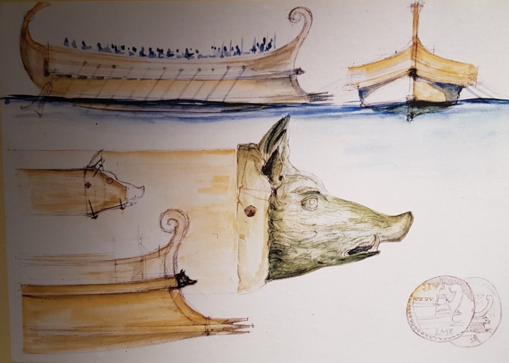
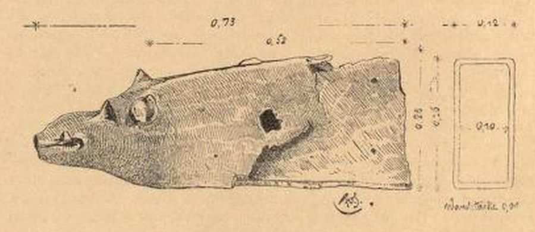
"Туринский таран"
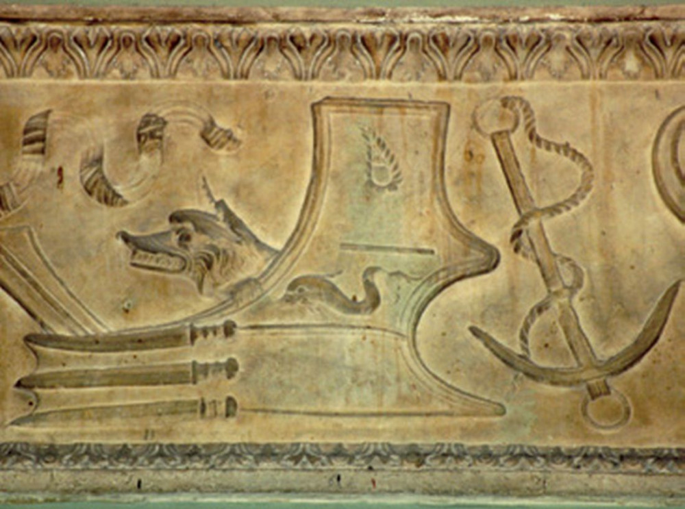
Проемболон был распространенным элементом изображений гребных кораблей эллинистической и римской эпохи. Он присутствовал на многих монетах и даже на совсем уж схематических эскизах, как например на черно-белом мозаичном панно III-IV вв. н.э. из Альтибуруса (римская провинция Африка, территория нынешнего Туниса). На этой мозаике изображено более двух десятков кораблей с названиями на латинском и греческом языках.
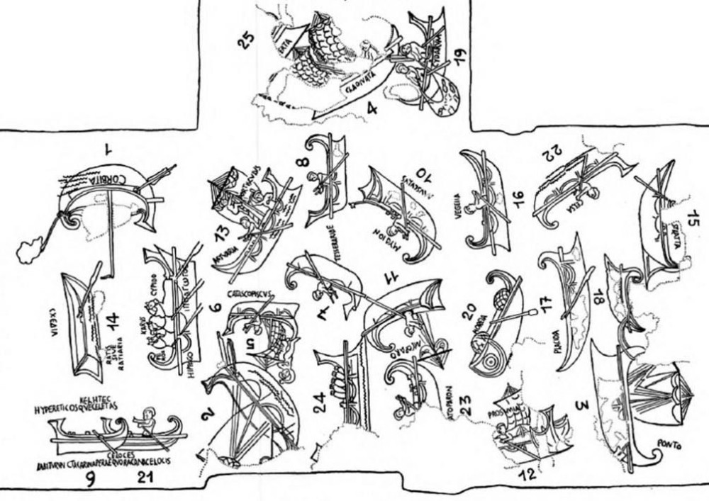
или в упорядоченном виде
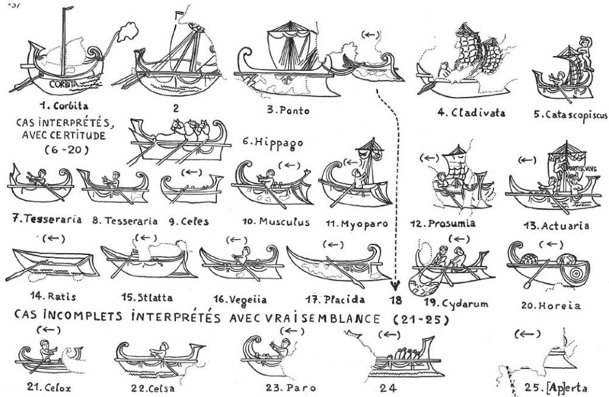
Среди всех типов носовой оконечности, практически лишь у одного (№8) из двух кораблей, имеющих одинаковые подписи Tesserariae, носовая оконечность имеет нависающую, выпуклую форму, которая близка к форме соответствующего элемента тарана из Белгаммеля.
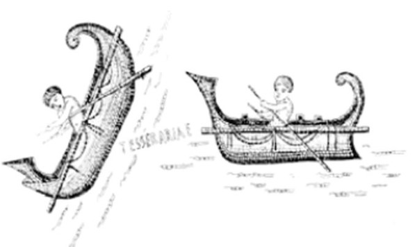
В нашей литературе имеется мало сведений о таком типе кораблей, как тессерарий. Да и вряд ли его стоит относить к особому типу кораблей. Скорее, это одна из двух категорий небольших военных кораблей, которые использовались в специальных целях. Первая категория – это kataskopos (naus) (по-гречески) или speculatoria navis (по-латински), разведывательные корабли. Как, например, у Плутарха:
[64] Ἐν δὲ τῷ χρόνῳ τούτῳ μεγάλη συνέστη Πομπηΐῳ δύναμις, ἡ μὲν ναυτικὴ καὶ παντελῶς ἀνανταγώνιστος (ἦσαν γὰρ αἱ μάχιμοι πεντακόσιαι, λιβυρνίδων δὲ καὶ κατασκόπων ὑπερβάλλων ἀριθμός),
Между тем Помпей успел собрать большие военные силы. Флот Помпея не имел себе равных. Он состоял из пятисот боевых кораблей и огромного числа легких и сторожевых судов.
Плутарх. Сравнительные жизнеописания в двух томах. Т. II, Помпей. (Перевод Г.А. Стратановского
Точнее перевод подчеркнутой фразы мог бы выглядеть так: «огромного числа либурн и разведывательных кораблей».
Термины kataskopos (naus) и speculatoria navis не означали специальный тип кораблей, в эту категорию могли входить любые малые суда, приспособленные и используемые для разведывательной службы.
Аналогично тессерарии, или тессеры – это была категория небольших военных кораблей, которые использовались для посыльной службы. Название это произошло от слова тессера, которым римляне обозначали вообще некие символические знаки, изображавшиеся на деревянных или глиняных табличках, а в частном случае в римской армии и на флоте тессеры использовались в разветвленной системе паролей. За сохранность и передачу паролей отвечало специальнрое должностное лицо – тессерарий . Отсюда происходит и название посыльного судна, на котором перемещался тессерарий.
Тессеры – это всего лишь одна из категорий античных военных кораблей, на которых устанавливались проемболоны. Роль этого устройства мы можем оценить, как и во многих других подобных случаях, лишь умозрительно. Мы уже говорили, что основная функция проемболона – защищить передние кромки вельсов от воздействия моря и от ударов противника. Не исключается также, что проемболон, наряду с эпотидами, служил для дополнительного разрушения конструкций надводной части корпуса вражеского корабля при таране.
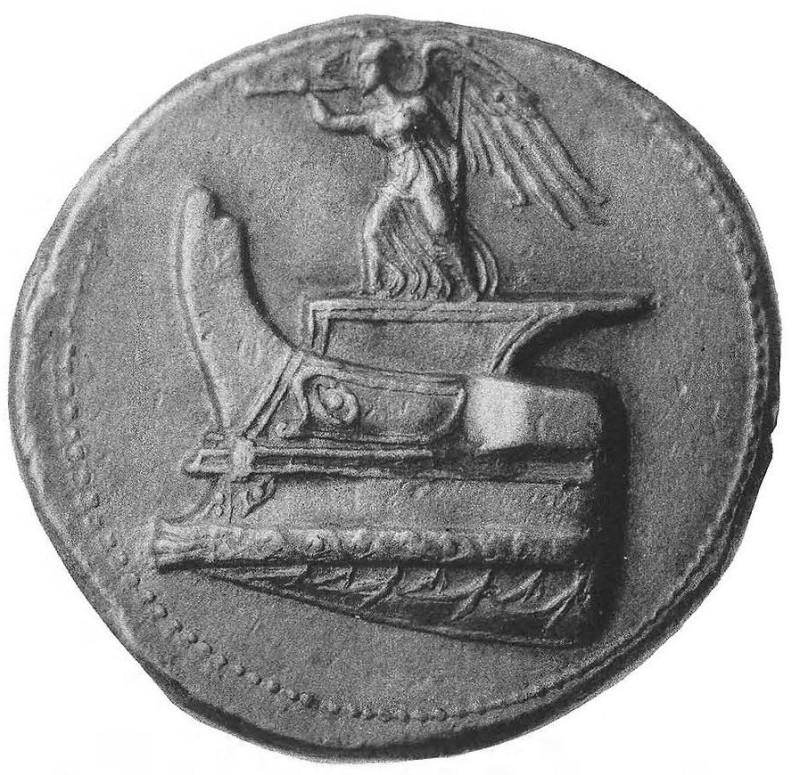
Нос античной галеры, ок. 300 г. до н.э. на монете Деметрия Полиоркета, выпущенной в честь победы при Саламине на Кипре (306 г. до н.э.)
Хотя, как представляется, защитные и декоративные функции являлись для проемболона основными.
Продолжим в следующий раз.